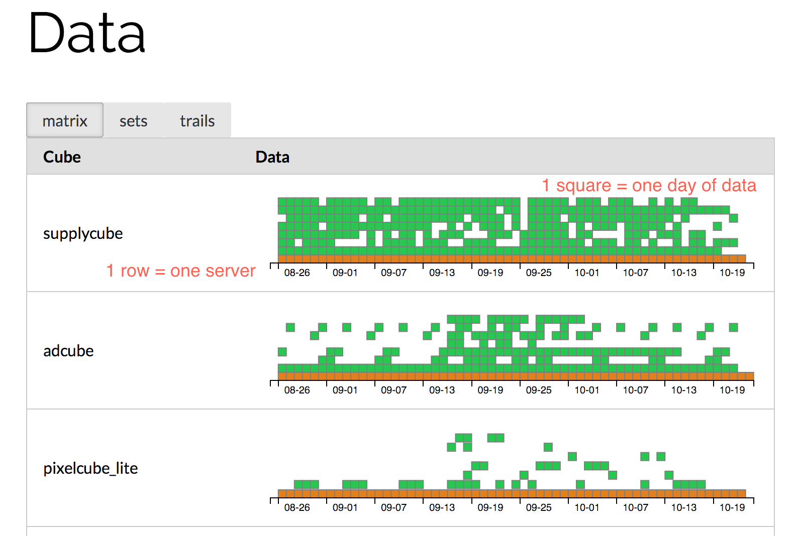

Scale Down!
Making High Performance Analytics Easy
Oleg Avdeev, AdRoll

- Ad tech (retargeting)
- Self service advertising
- Real Time Bidding
Real Time Bidding
Our data
- 100TB+/day raw data per day
- 50B+ events logged/day
- 4PB total (compressed)
Analytics?
- Complex aggregate queries
- (projections, GROUP BYs)
- Basically OLAP cubes
Nice things to have
- Interactive performance
- SQL support
- Low maintenance
Example query: number of events by customer and operating system over [2.3 billion] log lines
select customer_id, operating_system, sum(number_of_events)
from somecube
where day >= '2014-10-05'
group by 1,2;
Total runtime: 27663.113 ms
customer_id | operating_system | sum
--------------+------------------+-------------
7GBYHRBJVTCR | Android | 248131
YXFXRLRIRZIE | Iphone | 3516317
J5EKHBAOJAXK | MacOSX | 4294402
D2CZJNTGA2QA | Windows | 126877412
XOF5RCADNDXU | Other | 24
P2DPTAKDSAUN | Android | 264
2OBHFTULELVG | Iphone | 840240
NHA3LFIKFWMV | Android | 67211
3UBCBXTEINAO | Windows | 7992150
BAFXFKGKFTZM | Windows | 805
RUFZDX2MRH5Q | Ipad | 4791703
SYEXPLOCZF6R | MacOSX | 171675428
GCH7PDZFI2YY | Iphone | 36670
IVDBDVCDYMH5 | Linux | 9300528
RCESTQRHFFNS | Linux | 161949
4DBI32XAXIYP | Windows | 37151360
6PBKFJAI2ESL | Android | 1699090
6DFOHM4OPBZ7 | MacOSX | 73905914
TPFNZPTOBPLO | Ipad | 214512
EPGXDP2HBUF6 | Other | 24
U6BAFXGF7VPT | Ipad | 4369249
Massively scalable solution!
How many servers do we need?
100? 200?
Looks like 1-3 servers is enough!
at least for quite a while
Focusing on horizontal scalability?
Large distributed systems are not easy!
- Performance cost
- Operational cost
- Complexity cost
This is year 2014
- powerful hardware getting cheaper
- 1TB of RAM + 2TB SSD + 64 cores is ~$4K/mo
How big is your data
In information-theoretical sense..
- if it is user generated..
- 7B people can only produce so much entropy
DeliRoll
- Focus on data compression
- Column based store
- Mostly in-memory
- Bulk load only
Data compression
Data compression
Normalize data
Data compression
Normalize data
Data compression
Normalize data
Data compression
Dimensions vs metrics
Data compression
Dimensions vs metrics
Data compression
Sort rows
Data compression
Index, store by column
VLE, RLE, Dictionary-encode, Delta-encode
EVERYTHING
Data ingest pipeline
Numbers
- 4 trillion log lines in the biggest table (4 GB/day, 1 bit/logline)
- 3 servers 256G of RAM each
- Less than 10TB of data
Running a query
Query execution stack
Query execution
SQL Query
select sum(media_cost) from deliroll_adcube where day='2014-09-01' and browser='Ipad';
Query execution
SQL Query -> DeliRoll Query
fold f_browser_ipad*m_cost where f_browser_ipad == 1 groupby day range 2014-09-01
Query execution
SQL Query -> DeliRoll Query -> Python code
from numba import u1, u2, u4, u8, f8, void, jit
@jit(u4(u1[:],u8[:],u1[:],u2[:],u1[:]), nopython=True, warn=False):
def qfun(_flags,_out,_indptr,_indices,_m_cost):
_m_cost_idx = u4(0)
_m_cost_row = u4(0)
_m_cost_val = u8(0)
_matches = 0
...
# Loop over all rows
while (_indptr_idx < _indptr_len):
while (True):
_byte = _indptr[_indptr_idx]
_indptr_val = 0
if (_byte & 1):
_indptr_row += (_byte >> 1) + 1
_indptr_idx += 1
else:
_cont = _byte & 2
_shift = 6
_indptr_val = _byte >> u8(2)
_indptr_idx += 1
while (_cont):
_byte = _indptr[_indptr_idx]
_indptr_val |= (_byte >> u8(1)) << _shift
_shift += 7
_cont = _byte & 1
Query execution
SQL Query -> DeliRoll Query -> Python code -> Native code via LLVM
...
"while_body_32:20": ; preds = %"while_body_32:20.preheader", %"while_body_32:20"
%lsr.iv = phi i8* [ %scevgep, %"while_body_32:20.preheader" ], [ %58, %"while_body_32:20" ]
%_indptr_idx_618 = phi i64 [ %_indptr_idx_6, %"while_body_32:20" ], [ %_indptr_idx_616, %"while_body_32:20.preheader" ]
%47 = phi i64 [ %55, %"while_body_32:20" ], [ 6, %"while_body_32:20.preheader" ]
%var__indptr_val.0.load51017 = phi i64 [ %52, %"while_body_32:20" ], [ %42, %"while_body_32:20.preheader" ]
%lsr.iv1 = bitcast i8* %lsr.iv to i1*
%48 = load i8* %lsr.iv, align 1, !tbaa !2
%49 = zext i8 %48 to i64
%50 = lshr i64 %49, 1
%51 = shl i64 %50, %47
%52 = or i64 %51, %var__indptr_val.0.load51017
%53 = uitofp i64 %47 to double
%54 = fadd double %53, 7.000000e+00
%55 = fptoui double %54 to i64
...
Query execution
- Almost always goes for full scan
- Tens or hundreds of millions rows/sec/core
- Seconds to minutes per query
Distributed version
Basically, free lunch!
How to scale this?
just split data into chunks
data is mostly time series anyway
Replication?
don't care
store chunks in S3/Swift, download on demand
Replication
Treat it as just another level in cache hierarchy
Replication
Location aware scheduler
Distributed part
Cloud friendly
- Object storage to store data
- Spot instances for workers
- Adding/removing workers is handled gracefully (Erlang!)
- Using Hadoop clusters to compress data
Technology stack
- Python
- Erlang
- C
- Java
- 30-40K LOC total
Erlang!
- concurrency done right
- allows you to focus on important stuff
- think less about failure handling
- we use it a lot (e.g. all RTB is Erlang)
Wrap up: keep it simple
- Focus on efficient data storage, not building a monster cluster
- Powerful hardware is cheap these days
- Lots of corners to cut for analytics system
- Don't overcomplicate things
- Easy to scale when you need to
Questions?
oleg@usrlib.com
@lrrr